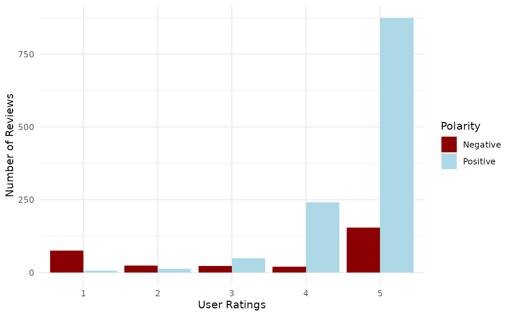

A Guide to Using the Package
2025-07-22
shoppingwords_tutorial.RmdOverview
This tutorial introduces the shoppingwords package, designed to simplify text processing and sentiment analysis for consumer reviews in Turkish.
The shoppingwords package provides datasets including review test and stopwords commonly used in online reviews in Turkish.
It also includes labeled polarity datasets for sentiment analysis.
The goal of this R package is to offer a structured dataset and analytical tools for exploring the relationship between user ratings and emotional sentiment in consumer reviews.
It serves as a valuable resource for text mining, sentiment analysis, and behavioral research, helping users identify patterns where high ratings may be linked to negative emotion.
Packages
For this vignette we will use the shoppingwords, dplyr and ggplot2 packages:
We’ll also load the shoppingwords package.
Package overview
The shoppingwords package provides several datasets
useful for text processing and analysis. This section introduces the
datasets stored in the data/ folder, explaining their
contents and showing how to load them into R.
The datasets included in the package are given in the Table:
| Dataset Name | Description |
|---|---|
reviews |
Turkish raw review data for sentiment analysis and Natural Language Processing (NLP) tasks. |
stopwords_tr |
A list of Turkish stopwords including shopping-based terms for text preprocessing. |
phrases |
A data containing predefined Turkish phrases for analysis. |
reviews_test |
Sample test data including sentence-based polarity for further NLP tasks (in Turkish). |
Table: Overview of the datasets in the package.
reviews
The reviews data frame is the core component of the
shoppingwords package, designed for text analysis, sentiment scoring, or
NLP tasks (e.g., customer feedback mining).
It contains a large number of reviews collected from a Turkish e-commerce site.
See the Table for the data dictionary for this data frame.
| Column | Description |
|---|---|
rating |
Numerical rating (1-5) from user reviews. |
comment |
Review content, including product opinions. |
id |
Review ID. |
Table: Data dictionary for the reviews data
frame.
glimpse(reviews)## Rows: 260,308
## Columns: 3
## $ rating <dbl> 5, 5, 5, 5, 1, 5, 5, 5, 2, 3, 1, 1, 3, 3, 1, 1, 1, 1, 3, 1, 4,…
## $ comment <chr> "Yorum gözüksün diye 5 yıldız verdim 5li paket diye sipariş ve…
## $ id <dbl> 3573, 3975, 4910, 4950, 5908, 6144, 6192, 6335, 6370, 6371, 63…English translations of the few comments visible in the output above are given below:
# $ rating <dbl> 5, 5, 5, 5, 5, 1, 5, 5, 5, 5, 2, 3, 1, 1, 3, 3, 1, 1, 1, 1, 1, 3, 1, 4,...
# $ comment <chr> "I gave 5 stars so that the comment would be visible I ordered a 5-pack and ...
# $ id <dbl> 3573, 3975, 4910, 4950, 5908, 6144, 6192, 6335, 6370, 6371,...```The dataset spans over 3 years (with the earliest review from April 16, 2022 and most recent from June 11, 2025), capturing reviews from users, including 260,308 rows, in customer feedback.
The examples have been translated to English, as the dataset contains reviews in Turkish.
stopwords_tr
stopwords_tr contains commonly found in Turkish
shopping-related text and are useful for text preprocessing and
analysis.
For example, it contains some words pertaining to clothing sizes.
## # A tibble: 3 × 1
## word
## <chr>
## 1 xxs
## 2 xs
## 3 sThis dataset can supplement stopwords-iso, which is a
standardized multilingual stopword collection, including Turkish but
potentially with broader coverage.
## [1] "acaba" "acep" "açıkça" "açıkçası" "adamakıllı"English translations of the few comments visible in the output above are given below:
# "I wonder" "perhaps" "clearly" "frankly" "thoroughly"Using both datasets reduces the risk of missing critical stopwords that could skew sentiment or topic modeling results.
phrases
The phrases data frame contains phrases that can assist
in text processing, linguistic analysis, and NLP applications, making it
easier to analyze customer behavior and responses.
## # A tibble: 2 × 1
## word
## <chr>
## 1 5 ulduz verdimki yorumum üstə
## 2 5 verdim ki öne çıksınEnglish translations of the comments visible in the output above are given below:
# "I gave 5 stars to pin my comment to the top"
# "I gave 5 to pin to the top" Using match_stopwords() to remove stop words
The match_stopwords() function processes user reviews by
removing predefined stopwords while preserving the original rating
scores.
It takes a dataframe with “comment” and “rating” columns, cleans each
review by filtering out stopwords from both custom stopword lists and
stopwords-iso, and returns a dataframe with an additional
cleaned_text column for further analysis.
This function helps in text normalization for sentiment analysis and rating-based insights.
To demonstrate a practical analytical use case for the preprocessed review data and how the package’s function work together in a real analysis workflow is given in the examples.
The example calculates if longer reviews correlate with higher/lower ratings.
cleaned_reviews <- match_stopwords(reviews) # Remove stopwords
cleaned_reviews |>
group_by(rating) |>
summarise(avg_text_length = mean(nchar(cleaned_text))) ## # A tibble: 5 × 2
## rating avg_text_length
## <dbl> <dbl>
## 1 1 65.7
## 2 2 59.8
## 3 3 52.7
## 4 4 48.0
## 5 5 43.1The function can be applied to another sample dataset as well.
reviews_sample <- tibble(
comment = c(
"Bu ürün xs ancak fiyatı yüksek gibi",
"Fiyat çok pahalı ama kaliteli iyi"
),
rating = c(4.5, 3.0)
)
cleaned_sample <- match_stopwords(reviews_sample) English translations of the text in comment and
cleaned_text columns in the output above are given
below:
# comment
# [1] "This product is xs but seems realy expensive"
# [2] "The price is not very expensive it's high-quality good"
# cleaned_text
# [1] "the product price high"
# [2] "the price expensive high-quality"
reviews_test
The shoppingwords package also includes a
reviews_test data for text mining and NLP tasks.
This data contains user-generated reviews labeled as positive
(p) or negative (n),
being different than reviews data and making it useful for training
models in sentiment classification.
See the Table for the data dictionary for this data frame.
| Column | Description |
|---|---|
rating |
Numerical rating (1-5) from user reviews. |
text |
Review content, including product opinions. |
emotion |
Sentiment label (p: positive, n:
negative). |
id |
Review ID. |
Table: Data dictionary for the reviews_test data
frame.
Below is a preview of the test dataset, which includes customer ratings, review text, and sentiment labels.
Each row represents user feedback, providing insights into product perception and satisfaction.
reviews_test |>
slice_head(n = 3)## # A tibble: 3 × 4
## rating text emotion id
## <dbl> <chr> <chr> <int>
## 1 5 Kesinlikle alın aldırın pahalı markalara o kadar para ve… p 1
## 2 5 10 yıldız olsa veririm super p 2
## 3 5 ürün 5 yıldız hakkediyor, ayrıca hem m hem de l beden al… p 3English translations of the comments in the text column
in the output above are given below:
# [1] Definitely buy it! No need to spend so much on expensive brands; the fit looks incredibly good.
# [2] If I could give 10 stars, I would. Super!
# [3] The product deserves 5 stars. I bought both M and L sizes, and they fit the same. I really liked it.Let’s take a look at the emotion distribution in this data frame:
reviews_test |>
count(emotion, sort = TRUE)## # A tibble: 2 × 2
## emotion n
## <chr> <int>
## 1 p 1184
## 2 n 297Summarizing the occurrences of rating and emotion in relation to negative and positive reviews is insightful.
Notably, 154 reviews contain negative expressions even though they have been assigned a rating of 5, out of a total of 1481 reviews.
## # A tibble: 10 × 3
## rating emotion n
## <dbl> <chr> <int>
## 1 5 p 874
## 2 5 n 154
## 3 4 p 241
## 4 4 n 20
## 5 3 p 49
## 6 3 n 23
## 7 2 n 24
## 8 2 p 13
## 9 1 n 76
## 10 1 p 7The reviews_test can be used in various ways such as capturing the
negative expressions or predicting sentence-level polarity using the
reviews.
This discrepancy between user ratings and comments is visualized in the Figure below, which shows the distribution of positive and negative reviews across all rating levels.
reviews_test |>
count(rating, emotion) |>
ggplot(aes(x = factor(rating), y = n, fill = emotion)) +
geom_col(position = "dodge") +
scale_fill_manual(
values = c("p" = "lightblue", "n" = "darkred"),
labels = c("p" = "Positive", "n" = "Negative")
) +
labs(
x = "User Ratings",
y = "Number of Reviews",
fill = "Polarity"
) +
theme_minimal() +
theme(legend.position = "right")
References
Benoit, K., Muhr, D., & Watanabe, K. (2021). stopwords: Multilingual Stopword Lists. R package version 2.3. URL: https://CRAN.R-project.org/package=stopwords.
Kan-Kilinc, B., Cetinkaya-Rundel, M. & Rundel, C. (2025). shoppingwords: Text Processing Tools for Turkish E-Commerce Data. R package version 0.1.0. URL: https://github.com/bkanx/shoppingwords.
Wickham, H., François, R., Henry, L., Müller, K., & Vaughan, D. (2023). dplyr: A Grammar of Data Manipulation. R package version 1.1.4. URL: https://CRAN.R-project.org/package=dplyr.
Wickham, H. (2016). H. Wickham. ggplot2: Elegant Graphics for Data Analysis. Springer-Verlag New York. URL: https://ggplot2-book.org.